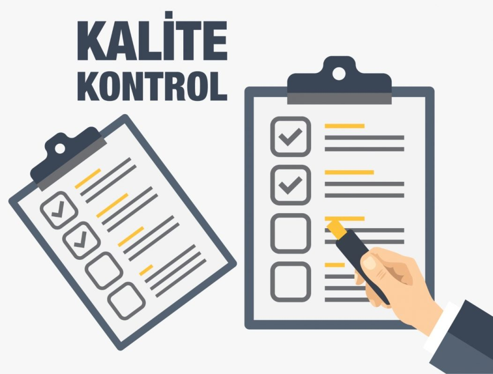
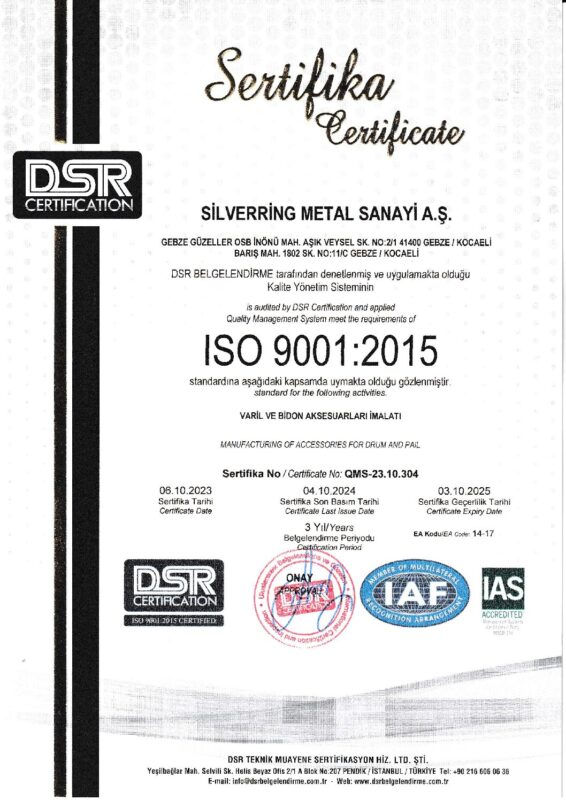
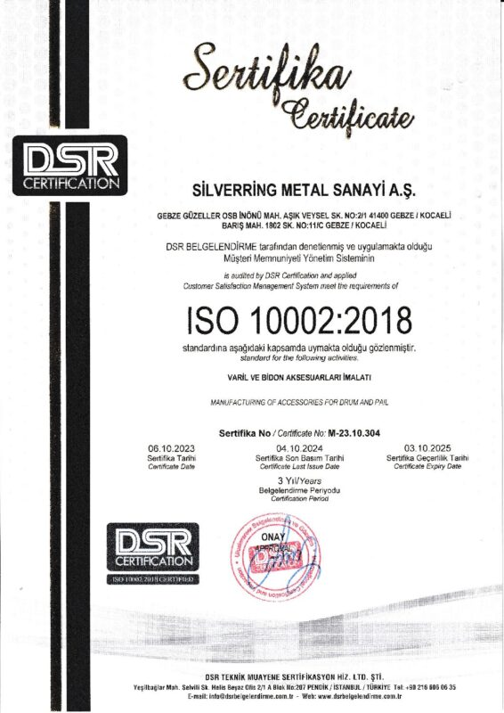
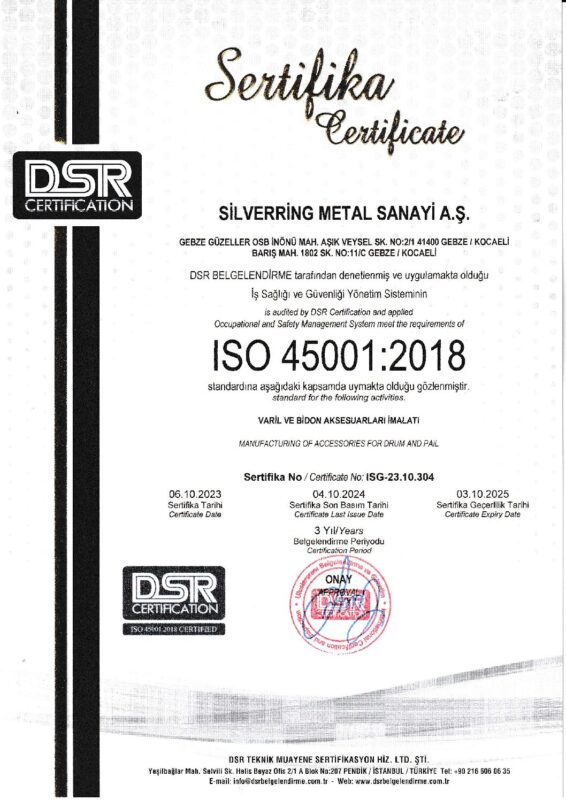
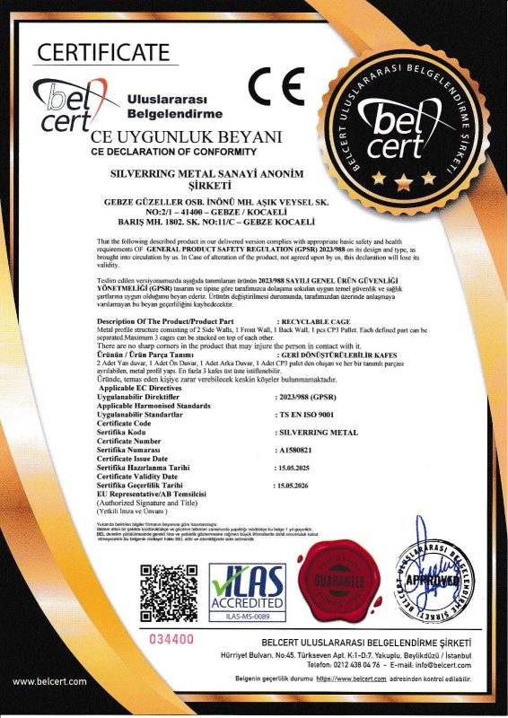
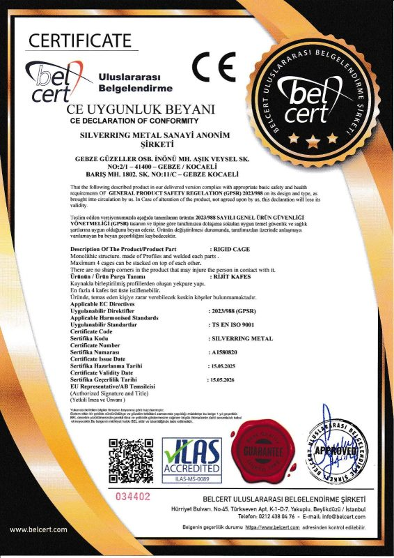
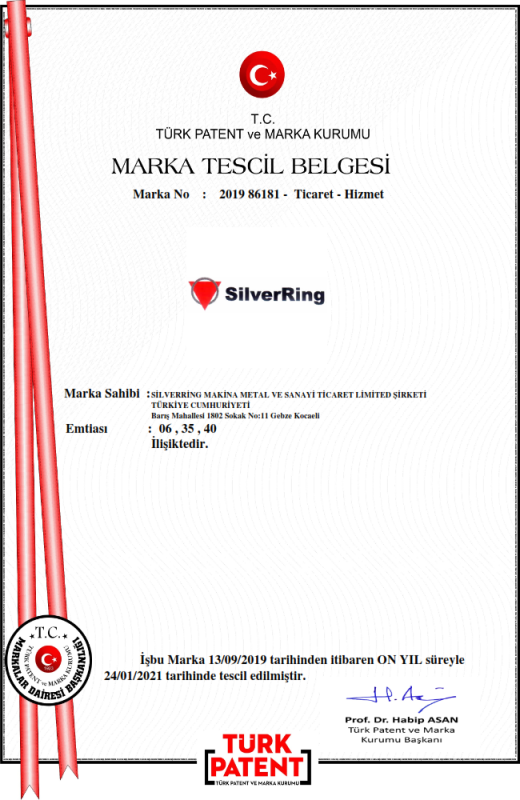

Çember, kilit mekanizması, garanti kapağı, plastik tapalar, bidon kulpları… "Müşteri Odaklılık" vizyonuyla her aşamada kalite.
Organizasyon yapısı içerisinde yüksek derecede önem verdiğimiz Kalite Kontrol süreçlerini oluşturduk. Müşteri memnuniyetinin sürekliliğinin vazgeçilmez unsuru olan kalite kontrol faaliyetleri, proaktif yaklaşım esas alınarak "önleme" mantığı çerçevesinde ele alınmaktadır.
Müşterilere özel üretilen ürünlerde; seri üretim faaliyetleri başlamadan önce karşılıklı mutabakat, test ve raporlama süreçleri yürütülerek ürünün beklenen tüm fonksiyonlarını kapsayacak şekilde özellikleri belirlenir ve numune üretim aşamasına geçilir. Üretilen numuneler reel uygulamalarla kabul kriterlerine göre kontrollerden geçirilir.
Seri üretime geçilen ürünlerde; Kalite Yönetim Sistemlerimiz içerisinde tanımlanmış talimatlara göre teknik kontrol kriterleri uygulanarak her aşamada kontroller gerçekleştirilir ve kayıt altına alınır. Kalite kontrol faaliyetlerimiz; hammadde ve yarı mamul girdi kontrolü, üretim aşamaları, stoklama, ambalajlama ve sevkiyat süreçlerimizin tamamını kapsamaktadır.

Kalite yönetim sistemlerimiz ve ürün uygunluğumuz, bağımsız kuruluşlarca belgelendirilmiştir.






SilverRing, ihracat faaliyetlerini kurumsal ve şeffaf bir yapı içinde yürütmek amacıyla ilgili ihracatçılar birliğine üyedir.
SilverRing markası, Türk Patent ve Marka Kurumu nezdinde tescillidir.
